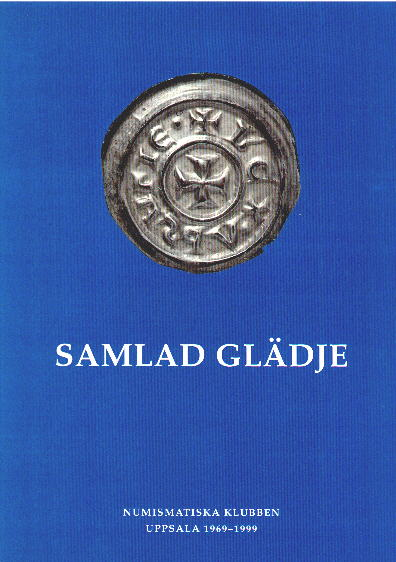

Program
Mötesreferat
Bli medlem
Historik
Stadgar
Samla mynt
Jubileumsbok
Jubileumsbok 2009
Jubileumsbok 2019
Småskrifter
Auktionskatalog
Länkar
Kontakt
Numismatiska klubben i Uppsala 1969-1999
|
Numismatiska klubben i Uppsala grundades 26 mars 1969. För att uppmärksamma 30-års jubileumet, har klubben utgivit en jubileumsbok. Boken, som är inbunden, omfattar ca. 170 sidor och är rikt illustrerad.
Boken kan beställas genom insättning av 150 kr på Numismatiska klubben i Uppsalas bankgiro 871-4578. Priset inkluderar försändelse inom Norden. Boken kan även köpas på klubbens sammankomster och på Kungliga Myntkabinettet, för 100 kr.
Recensioner: |
 |
| Sven-Erik Olsson | Numismatiska klubben i Uppsala 1969-1999. |
| Per-Göran Carlsson | Den svenska myntmarknadens utveckling 1969-1999. |
| Curt Ekström | Kvalitet och prisbild på antika mynt. |
| Frédéric Elfver | Torspenningen från Uppsala. Om ett bortglömt myntfynd från 1680-talet. |
| Anders Frösell | Ett svensk-franskt kulturutbyte på 1600-talet. |
| Christian Hamrin | Myntprägling och präglingsavvikelser på moderna mynt. |
| Bengt Hemmingsson | Apokryfiska mynt från Erik XIV:s tid. |
| Frands Herschend | Viktbestämningarna på bägarna från Holby på Lolland. |
| Kjell Holmberg | Ett tidigare opublicerat exemplar av Albrekt av Mecklenburg, LL 1. |
| Kenneth Jonsson | Myntreformen i Svealand 1216. |
| Lars O. Lagerqvist | Den sista kröningen i Uppsala domkyrka. |
| Elsa Lindberger | Flight 939. Eller fågelvägen York-Uppsala. Om Anlaf Cununcs mynt i Uppsala universitets myntkabinett. |
| Carl-Axel Lindblom | 2 Daler SM 1673 från Garpenberg. Minnen och kommentarer. |
| Brita Malmer | Sigtuna eller Lund? Om egentliga stampkopplingar och oväntade fyndplatser. |
| Harald Nilsson | Från Apollon till Daniel Fryklund. Musikinstrument på antika mynt i Musikmuséets samlingar. |
| Ulf Nordlind | Bror Hjort. En stor medaljkonstnär från Uppland. |
| Cecilia Persson | Aktiv och passiv. Klassificering av vikingatida skattfynd utifrån myntsammansättningen. |
| Torbjörn Sundquist | Kastpenningar och regentkröningar i Uppsala domkyrka 1528-1675. |
| Bertel Tingström | Clevevapnet. |
| Eva Wiséhn | Runmärkt. |
| Ian Wiséhn | Friherre Henning Wrangel och papperspolletterna från Sperlingsholm. |